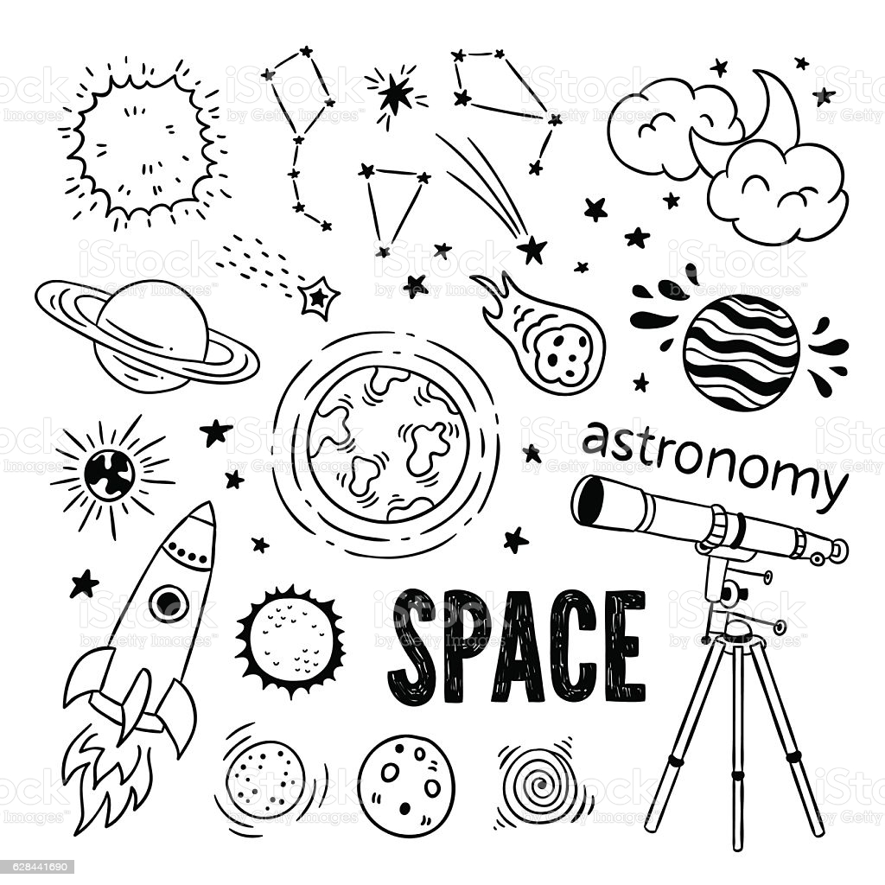

Astronomy

Back To Main
All information is from Britannica
Look there for more information.
- Introduction
- Study of the Solar System
Introduction
astronomy, science that encompasses the study of all extraterrestrial objects and phenomena. Until the invention of the telescope and the discovery of the laws of motion and gravity in the 17th century, astronomy was primarily concerned with noting and predicting the positions of the Sun, Moon, and planets, originally for calendrical and astrological purposes and later for navigational uses and scientific interest. The catalog of objects now studied is much broader and includes, in order of increasing distance, the solar system, the stars that make up the Milky Way Galaxy, and other, more distant galaxies. With the advent of scientific space probes, Earth also has come to be studied as one of the planets, though its more-detailed investigation remains the domain of the Earth sciences.
Study of the Solar System
The solar system took shape 4.57 billion years ago, when it condensed within a large cloud of gas and dust. Gravitational attraction holds the planets in their elliptical orbits around the Sun. In addition to Earth, five major planets (Mercury, Venus, Mars, Jupiter, and Saturn) have been known from ancient times. Since then only two more have been discovered: Uranus by accident in 1781 and Neptune in 1846 after a deliberate search following a theoretical prediction based on observed irregularities in the orbit of Uranus. Pluto, discovered in 1930 after a search for a planet predicted to lie beyond Neptune, was considered a major planet until 2006, when it was redesignated a dwarf planet by the International Astronomical Union.
The average Earth-Sun distance, which originally defined the astronomical unit (AU), provides a convenient measure for distances within the solar system. The astronomical unit was originally defined by observations of the mean radius of Earth’s orbit but is now defined as 149,597,870.7 km (about 93 million miles). Mercury, at 0.4 AU, is the closest planet to the Sun, while Neptune, at 30.1 AU, is the farthest. Pluto’s orbit, with a mean radius of 39.5 AU, is sufficiently eccentric that at times it is closer to the Sun than is Neptune. The planes of the planetary orbits are all within a few degrees of the ecliptic, the plane that contains Earth’s orbit around the Sun. As viewed from far above Earth’s North Pole, all planets move in the same (counterclockwise) direction in their orbits.
Most of the mass of the solar system is concentrated in the Sun, with its 1.99 × 1033 grams. Together, all of the planets amount to 2.7 × 1030 grams (i.e., about one-thousandth of the Sun’s mass), and Jupiter alone accounts for 71 percent of this amount. The solar system also contains five known objects of intermediate size classified as dwarf planets and a very large number of much smaller objects collectively called small bodies. The small bodies, roughly in order of decreasing size, are the asteroids, or minor planets; comets, including Kuiper belt, Centaur, and Oort cloud objects; meteoroids; and interplanetary dust particles. Because of their starlike appearance when discovered, the largest of these bodies were termed asteroids, and that name is widely used, but, now that the rocky nature of these bodies is understood, their more descriptive name is minor planets.
The four inner, terrestrial planets—Mercury, Venus, Earth, and Mars—along with the Moon have average densities in the range of 3.9–5.5 grams per cubic cm, setting them apart from the four outer, giant planets—Jupiter, Saturn, Uranus, and Neptune—whose densities are all close to 1 gram per cubic cm, the density of water. The compositions of these two groups of planets must therefore be significantly different. This dissimilarity is thought to be attributable to conditions that prevailed during the early development of the solar system (see below Theories of origin). Planetary temperatures now range from around 170 °C (330 °F, 440 K) on Mercury’s surface through the typical 15 °C (60 °F, 290 K) on Earth to −135 °C (−210 °F, 140 K) on Jupiter near its cloud tops and down to −210 °C (−350 °F, 60 K) near Neptune’s cloud tops. These are average temperatures; large variations exist between dayside and nightside for planets closest to the Sun, except for Venus with its thick atmosphere.
The surfaces of the terrestrial planets and many satellites show extensive cratering, produced by high-speed impacts (see meteorite crater). On Earth, with its large quantities of water and an active atmosphere, many of these cosmic footprints have eroded, but remnants of very large craters can be seen in aerial and spacecraft photographs of the terrestrial surface. On Mercury, Mars, and the Moon, the absence of water and any significant atmosphere has left the craters unchanged for billions of years, apart from disturbances produced by infrequent later impacts. Volcanic activity has been an important force in the shaping of the surfaces of the Moon and the terrestrial planets. Seismic activity on the Moon has been monitored by means of seismometers left on its surface by Apollo astronauts and by Lunokhod robotic rovers. Cratering on the largest scale seems to have ceased about three billion years ago, although on the Moon there is clear evidence for a continued cosmic drizzle of small particles, with the larger objects churning (“gardening”) the lunar surface and the smallest producing microscopic impact pits in crystals in the lunar rocks.
All of the planets apart from the two closest to the Sun (Mercury and Venus) have natural satellites (moons) that are very diverse in appearance, size, and structure, as revealed in close-up observations from long-range space probes. The four outer dwarf planets have moons; Pluto has at least five moons, including one, Charon, fully half the size of Pluto itself. Over 200 asteroids and 80 Kuiper belt objects also have moons. Four planets (Jupiter, Saturn, Uranus, and Neptune), one dwarf planet (Haumea), and one Centaur object (Chariklo) have rings, disklike systems of small rocks and particles that orbit their parent bodies.